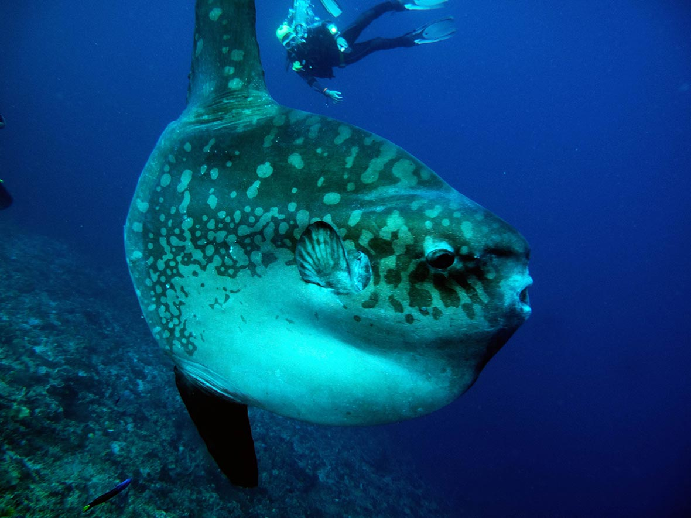
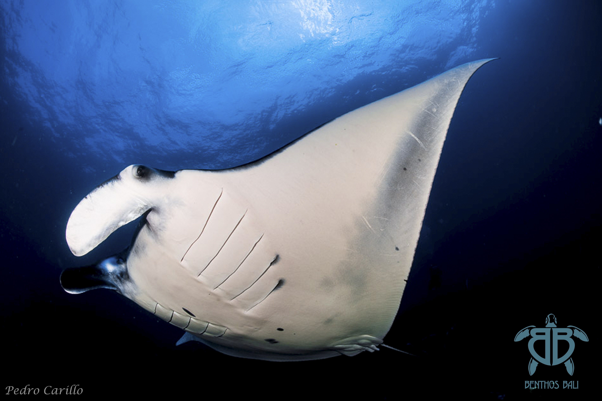
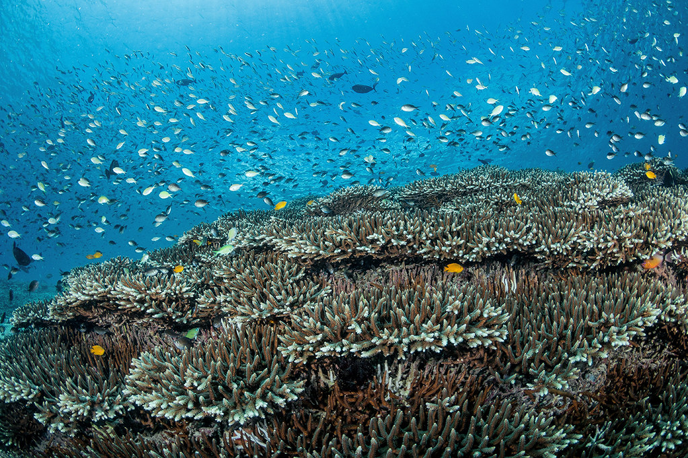

Crystal Bay
La bahía Crystal cuenta con un espectacular paisaje de una extensa playa de arena blanca y colinas color esmeralda. Este sitio de buceo ofrece una visibilidad fantástica y es el lugar ideal para avistar al tímido pez luna oceánico (Mola-mola). Estos amables gigantes suelen medir más de 3 metros de circunferencia y emergen de las profundidades de las fosas entre Nusa Ceningan y Penida para alimentarse de medusas.
Al comenzar el descenso a unos 6-7 metros, llegará a una meseta coralina; aquí verá una variedad de algunos de los corales más sanos y vibrantes del Triángulo de Coral. A menudo vemos a buzos inexpertos aferrándose a los corales y dañándolos debido a las condiciones impredecibles. Tenga cuidado al bucear y manténgase dentro de los límites con los que se sienta cómodo.
Manta Point
El nombre lo dice todo: Manta Point está repleta de bancos de mantarrayas (Manta Alfredi) durante todo el año. También hay numerosas rayas de puntos azules y coloridos corales duros y blandos.
Los buceadores principiantes a veces pueden sentirse nerviosos al ser recibidos por un péndulo de oleadas al ingresar, pero no hay nada de qué preocuparse. Al comenzar el descenso a unos 4-5 metros, es muy probable que te encuentres con elegantes mantas blancas y negras. Merodean por la estación de limpieza y se alimentan de las frescas aguas ricas en nutrientes.
El sitio está cubierto de corales duros y blandos, pero la corriente costera limita el crecimiento del coral solo a cierta altura. Esta es una inmersión poco profunda, con una profundidad máxima de 20 metros.


SD
Este sitio de buceo recibe su nombre de un templo sagrado subterráneo de la isla. Al igual que el cercano PED Point, SD alberga a numerosos cultivadores de algas.
Esta puede ser una inmersión suave a la deriva o mucho más rápida, dependiendo de la marea. La topografía de SD es muy similar a la de todo el norte de penida aunque se diferencian en 4 puntos, comenzando con una meseta coralina agradable y poco profunda que desciende hasta profundidades extremas de unos 100 metros. SD es conocido por los corales duros y blandos que bordean las empinadas laderas y paredes.
Lo que probablemente verá aquí son bancos de peces cristal escondidos en grietas, muchos lábridos Napoleón, meros, peces león y tortugas verdes que disfrutan alimentándose de algas.
Tenemos más puntos de buceo y por supuesto nos adaptamos a ti!!
Contáctanos para más información
Contactar
Síguenos en nuestras redes